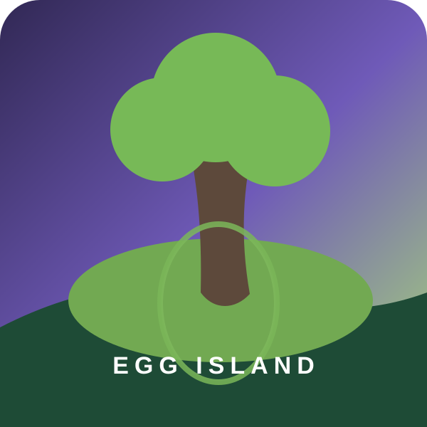

DAN ISLAND · MUSIC ODYSSEY
沿着音乐地图，寻找你的岛主。
专辑与个人单曲必带，影视原声及每档综艺都可以自由开关。
01 / 出发准备选择本次环游范围140 首
✓ 专辑曲 · 必选✓ 个人单曲 · 必选
影视与音乐综艺默认开启 3 项
140 首曲库
四选一加速
⛵启航湾海选复活
🌊潮汐滩四十进二十
🪨回声礁二十进十
🌲萤光林十进五
⛺岛心营地五选二
🥚岛主峰最终决选
从这组里留下唯一一首
哪一首值得先登岛？
只有登岛海选可以跳过整组，之后不会再出现此按钮。
TIDAL REVIVAL
潮水送回一些遗珠
从离岛歌曲中选回 2 首，补足四十强。
0 / 2
STAGE CLEAR
四十首歌进入环岛航线
巡游路线已更新，下一站继续缩小范围。
当前环游路线越往右，偏爱越清晰
OWNER OF DAN ISLAND
你的蛋岛岛主是
—
—
完整环游路线140 首 → 唯一岛主